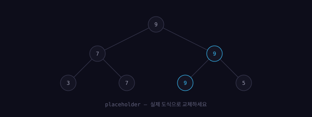

이 글은 이 아카이브의 모든 기능을 예제와 함께 정리한 사용 설명서다. 글을 쓰는 법부터 자료를 올리고 인용하는 법까지, 순서대로 따라 하면 된다.지금 읽고 있는 이 회색 박스가 바로 여백주석이다. 넓은 화면에서는 오른쪽 여백에, 좁은 화면에서는 위첨자 번호를 눌렀을 때 아래에서 올라오는 시트로 보인다.
assets/data/content.js 파일 하나만 고치면 된다.
글·자료·문제·연구를 이 파일에 등록하면 왼쪽 트리, 목록 페이지,
홈 대시보드, 활동 잔디가 전부 자동으로 갱신된다.
0. 파일을 올린다는 게 무슨 뜻인가
이 사이트에는 관리자 화면이나 업로드 버튼이 없다. GitHub Pages로 돌아가는
정적 사이트라서, 내 컴퓨터의 jongdal 폴더가 곧 사이트다.
파일을 올린다는 건 그 폴더에 파일을 넣고 git push 하는 것을 말한다.푸시하고
10초에서 1분쯤 뒤에 실제 사이트에 반영된다. 바로 안 보이면 새로고침을 한 번 더 하거나
캐시를 비우고 새로고침(Ctrl+Shift+R)하면 된다.
0.1 무엇을 어디에 넣는가
| 파일 종류 | 넣는 곳 | 글에서 부르는 경로 |
|---|---|---|
| 글 HTML | posts/ | — |
| 이미지 (png·jpg·svg) | assets/img/ | ../assets/img/파일명 |
| 자료 PDF | assets/files/ | /assets/files/파일명 |
경로 앞이 ../ 인 것과 / 인 것이 다른 이유가 있다.
글은 posts/ 안에 있으므로 이미지를 부르려면 한 단계 위로
올라가야 해서 ../ 를 쓴다. 반면 자료 PDF는 목록 페이지와 글
양쪽에서 부르므로, 어디서든 같은 주소가 되도록 사이트 최상단 기준
/assets/files/… 로 쓴다.
0.2 실제 순서
- 탐색기에서
C:\Users\songh\jongdal폴더를 연다. - 해당 폴더에 파일을 끌어다 놓는다.
- 필요하면
assets/data/content.js에 등록한다. (자료·글은 필수, 이미지는 불필요) - 터미널에서 아래를 실행한다.
cd C:\Users\songh\jongdal
git add -A
git commit -m "자료 추가: Concrete Mathematics"
git push
push 하고 나면 나머지는 자동이다. GitHub Actions 가 데이터를 점검하고
sitemap.xml 과 RSS 피드를 다시 만들고, 각 글의 메타태그를
content.js 기준으로 맞춰 준다.저장소의 Actions
탭에서 결과를 볼 수 있다. 빨간 X 가 뜨면 데이터에 문제가 있다는 뜻이니
로그를 열어 보면 무엇이 잘못됐는지 한국어로 적혀 있다.
git add -A 의 -A 는 새로 넣은 파일과 지운 파일까지
전부 포함하라는 뜻이다.파일을 넣었는데 사이트에 안 나타나는
경우, 열에 아홉은 git add 를 빠뜨렸거나 content.js 등록을
잊은 것이다.
1. 글 한 편을 새로 쓰는 전체 흐름
왼쪽 사이드바 위쪽의 + 새로 쓰기 버튼을 누르면 열린다.
(주소로 바로 가려면 /write.html)
왼쪽에 쓰고 오른쪽에서 결과를 실시간으로 확인하는 2단 구성이다.
화면 맨 위에 글 · 자료 · 문제 · 연구·프로젝트 네 가지 모드가 있다.
글이 아닌 것도 여기서 만들 수 있고, 어느 모드든 등록하기 탭에
content.js 에 붙여 넣을 코드가 자동으로 만들어진다.글 모드에서만
HTML 파일을 내려받는다. 자료·문제·연구는 파일이 필요 없고 등록 코드만 있으면 된다.
- 제목·분류·날짜·태그·요약을 위쪽 칸에 채운다. 저장될 파일명이 그 아래 바로 표시된다.
- 툴바 버튼을 눌러 가며 본문을 쓴다. 작성 내용은 자동 저장되므로 창을 닫아도 남아 있다.
- 글 파일 내려받기 를 누른다. 누르면 오른쪽이 등록하기 탭으로 자동 전환된다.
- 그 탭에
content.js에 붙여 넣을 코드와 터미널 명령이 이미 채워진 채로 나오므로, 복사 버튼을 눌러 그대로 쓰면 된다.
등록을 빠뜨리면 글 파일은 올라가 있어도 목록에 나타나지 않는다.반대로 등록만 하고 파일을 안 넣으면 목록에는 뜨지만 눌렀을 때 404가 뜬다. 등록 형식은 다음과 같다. (도구가 자동으로 만들어 주지만 직접 쓸 수도 있다)
posts: [
{ title: '글 제목',
file: '2026-08-20-my-post.html', // posts/ 안의 파일명
category: 'essay', // 새 값을 쓰면 트리에 분류가 자동 생성
date: '2026-08-20',
tags: ['태그1', '태그2'],
pinned: false, // true 면 홈 상단에 고정
links: ['2026-08-10-euler-phi.html'], // 이 글이 인용한 글 (백링크 자동 생성)
summary: '홈 카드에 보일 한 줄 요약' }
]2. 분류 — 상위와 하위
분류는 슬래시로 계층을 만든다. 'algo/graph' 라고 쓰면
알고리즘 아래에 그래프가 생긴다. 깊이 제한은 없어서
'algo/graph/flow' 처럼 더 내려갈 수도 있다.
category: 'algo/graph' // 알고리즘 › 그래프
category: 'math/analysis' // 수학 › 해석학
만드는 절차는 따로 없다. 값을 쓰는 순간 왼쪽 트리에 계층이 생기고,
posts.html#algo/graph 인덱스와 색이 자동으로 만들어진다.상위
분류를 고르면 그 아래 모든 하위 글이 함께 보인다. 예를 들어 트리에서
'알고리즘'을 누르면 그래프·자료구조 글이 모두 나오고, 목록 위 칩으로
더 좁혀 갈 수 있다.
한글 이름표는 labels 에 상위·하위를 각각 적는다.
빠뜨리면 영문 id가 그대로 보이고 콘솔이 알려 준다.
labels: {
algo: '알고리즘',
'algo/graph': '그래프', // ← 하위는 전체 경로로
'algo/data-structure': '자료구조'
}colors 에 한 줄 적으면 된다.
3. 본문 문법 — 전부
3.1 기본 마크다운
## 제목, **굵게**, *기울임*,
`인라인 코드`, - 목록, > 인용,
---(구분선), [텍스트](주소)(링크)가 동작한다.
외부 링크는 자동으로 화살표가 붙는다 — KaTeX 지원 함수 목록 처럼. 마우스를 올리면 하늘색으로 바뀐다.
인용문은 이렇게 왼쪽에 실선이 붙은 형태로 나온다.
3.2 코드 블록
백틱 세 개와 언어 이름으로 감싼다. 툴바의 ```코드블록``` 버튼을 쓰면
자동으로 삽입된다.
```cpp
int main() { return 0; }
```
결과물에는 줄 번호, 들여쓰기 가이드라인, 마우스를 올리면 나타나는 복사 버튼이
자동으로 붙는다. 500줄이 넘으면 내부 스크롤이 생기고 아래에
전체 펼치기 버튼이 나온다.언어 이름은
cpp, python, javascript 등
highlight.js가 지원하는 이름을 쓰면 된다.
#include <bits/stdc++.h>
using namespace std;
int main() {
int n;
cin >> n;
vector<int> a(n);
for (int i = 0; i < n; i++) {
cin >> a[i];
if (a[i] < 0) {
a[i] = 0; // 들여쓰기 가이드라인이 보이는 깊이
}
}
cout << accumulate(a.begin(), a.end(), 0) << '\n';
}3.3 수식
인라인은 $...$, 디스플레이는 $$ 로 감싼 줄을 앞뒤에 둔다.
KaTeX로 렌더링되며 Computer Modern 계열 글꼴로 나온다.
본문에 배경색 없이 그대로 묻어난다 — 예를 들어 $e^{i\pi} + 1 = 0$ 처럼.
인라인: 오일러 항등식 $e^{i\pi} + 1 = 0$ 은 아름답다.
디스플레이:
$$
\int_a^b f(x)\,dx = F(b) - F(a)
$$결과:
$$\int_a^b f(x)\,dx = F(b) - F(a)$$
긴 수식은 가로 스크롤이 생기므로 레이아웃이 깨지지 않는다.
증명의 마지막 결론은 아래처럼 주황색 상자로 강조할 수 있다.
HTML 내보내기 후 <div class="key"> 로 감싸면 된다.주황색은
전체에서 1%만 쓰기로 한 색이다. 한 글에 하나 정도만 쓰는 걸 권한다.
3.4 여백주석
^[내용] 이라고 쓰면 된다. 툴바에 버튼도 있다.
본문에는 작은 보라색 번호만 남고, 실제 내용은 넓은 화면에서 오른쪽 여백에,
좁은 화면에서는 번호를 눌렀을 때 바텀 시트로 나타난다.
이 부분은 조금 더 설명이 필요하다.^[사실 여기에는 예외가 하나 있다.]3.5 글끼리 연결하기
본문에서는 [[글 제목]] 으로 다른 글을 연결한다.
여백주석과 겹쳐 쓰면 왜 연결되는지까지 적을 수 있다.
글 하단의 백링크 두 목록과 인용 관계 그래프는 직접 쓰지 않는다.
content.js 의 links 배열에 인용한 글의 파일명을 적어 두면
양쪽 방향이 자동으로 만들어진다 — A가 B를 인용한다고 적으면,
B의 페이지에는 "이 글을 인용한 글"에 A가 저절로 나타난다.한쪽만
적으면 되므로 관계를 두 번 관리할 일이 없다. 그래프의 동그라미도 눌러서
해당 글로 이동할 수 있다.
^[[[오일러 피 함수의 곱셈적 성질]]에서 쓴 논증과 같은 구조다]3.6 이미지와 캡션
이미지 파일은 assets/img/ 에 넣고, 본문에서 상대경로로 부른다.
캡션은 선택 사항이며, 넣으면 아래에 가운데 정렬로 붙는다.
배경이 흰 캡처를 그대로 넣어도 얇은 테두리 덕분에 어색하지 않다.
<figure>
<img src="../assets/img/my-diagram.svg" alt="설명">
<figcaption><span class="fig-no">Fig 1.</span>캡션 내용</figcaption>
</figure>
4. 자료정리집에 자료 올리기
교재·논문·링크는 글이 아니라 자료다.
PDF 파일은 assets/files/ 에 넣고,
content.js 의 library 배열에 등록한다.
글쓰기 도구의 자료 모드를 쓰면 아래 코드를 직접 쓰지 않아도 된다.
library: [
{ ref: 'Ref-M03', // 인용에 쓸 고유 태그 (겹치지 않게)
title: '자료 제목',
author: '저자',
year: 2024,
fmt: 'PDF', // PDF | LINK | BOOK 등 자유
category: 'math', // 새 값을 쓰면 새 인덱스가 자동 생성
url: '../assets/files/my.pdf',
desc: '이 자료를 왜 보관하는지, 어디에 쓰는지 설명',
tags: ['정수론', '교재'] }
]등록하면 자료정리집 페이지에 카테고리별로 묶여 나타나고, 오른쪽 [Ref-xx] 버튼을 누르면 인용 문구가 클립보드에 복사된다.
4.1 본문에서 자료 인용하기
글쓰기 도구의 자료 인용 버튼을 누르면 등록된 자료 목록이
뜨고, 고르면 {{Ref-A02}} 가 본문에 삽입된다.
결과는 이렇게 나온다 —
제목·저자·연도가 자동으로 채워지고,
자료정리집에서 보기 링크를 누르면 그 자료가 있는 분류로
이동해 해당 항목이 강조된다.
글쓰기 도구에서: 이 문장에 근거를 단다 {{Ref-A02}}
HTML을 직접 쓸 때: 이 문장에 근거를 단다 <span class="cite" data-ref="Ref-A02"></span>자료정리집에서 항목을 수정하면 그 자료를 인용한 모든 글의 표시가 한꺼번에 바뀐다.등록되지 않은 ref를 쓰면 "자료정리집에 등록되지 않은 인용입니다"라고 표시되므로 오타를 바로 알 수 있다.
5. 연구·프로젝트에 추가하기
research 배열에 등록한다. post 에 글 파일명을 적으면
카드가 그 글로 연결되고, 비워 두면 url 로 연결된다.
글쓰기 도구의 연구·프로젝트 모드에서 연결할 글을 목록에서 고를 수 있다.
research: [
{ title: '프로젝트 제목',
kind: 'ONGOING', // ONGOING | PROJECT | PAPER 등
year: 2026,
desc: '두세 줄 설명',
tags: ['역학'],
url: '#',
post: '2026-08-17-lis-segment-tree.html' } // 관련 글 (선택)
]6. 문제 아카이브에 문제 추가하기
problems 배열에 등록한다. note 에 적은 뒷이야기가
제목 아래 기울임체로 붙는 것이 이 아카이브의 특징이다.
diff 값으로 난이도 필터가 동작한다.
글쓰기 도구의 문제 모드에서 미리보기를 보며 작성할 수 있다.
problems: [
{ title: '문제 제목',
date: '2026-08-20',
diff: 'hard', // easy | mid | hard
tags: ['세그먼트 트리'],
url: 'https://www.acmicpc.net/problem/1000',
note: '이 문제를 만든 계기나 뒷이야기' }
]7. 홈 화면 관리
- 고정 글 — 글에
pinned: true를 주면 주황색 테두리로 상단에 고정된다. - 최근 글 — 날짜 순으로 자동 정렬되어 5개까지 표시된다.
- 현재 탐구 중 —
content.js맨 아래now문자열을 고친다. - 활동 잔디 — 글·문제·연구에 적은
date를 모아 자동으로 칠한다. 오늘이 항상 오른쪽 끝이며, 등록한 기록이 없는 날은 빈칸으로 남는다. 칸에 커서를 올리면 그날의 날짜와 기록 목록이 뜬다.
8. 그 밖의 기능
- 검색 — 어느 페이지에서든
Ctrl + K. 글·자료·문제·연구의 제목과 태그를 한 번에 찾는다. - 현재 위치 표시 — 글을 읽는 중이면 왼쪽 트리에서 그 분류가 펼쳐지고 지금 보고 있는 글의 제목이 아래에 표시된다.
- 부분 코멘트 — 본문에서 문장을 드래그하면 "이 부분에 코멘트" 버튼이 뜬다. 누르면 그 문장이 인용된 채로 GitHub 이슈 작성 화면이 열린다.정적 사이트라 댓글을 서버에 저장할 수 없어서, 대신 저장소 이슈로 남기는 방식을 썼다.
- 읽기 진행률 — 오른쪽 세로 막대. 클릭하면 그 위치로 이동한다.
- 트리 접기 상태 — 펼쳐 둔 상태가 기억되어 페이지를 옮겨도 유지된다.
- 404 — 없는 주소로 들어가면 컴파일러 에러 형식의 안내가 나온다.
- 이전 / 다음 글 — 같은 분류 안에서 날짜순으로 자동 연결된다.
- 읽는 시간 — 본문 길이로 자동 계산해 제목 아래에 표시된다.
- 인쇄 — Ctrl+P 를 누르면 사이드바·버튼을 빼고 본문만 흰 종이에 맞춰 나온다. 여백주석은 본문 흐름 안으로 들어가고 링크 주소가 괄호로 표시된다.
- 데이터 점검 —
content.js에 중복된 인용 태그나 없는 파일을 가리키는 연결이 있으면 브라우저 개발자 도구(F12) 콘솔에 경고가 뜨고, push 할 때 GitHub Actions 도 같은 검사를 한다. - 목차 — 소제목이 3개 이상이면 글 위에 자동으로 생기고, 읽는 위치에 따라 현재 항목이 표시된다.
- 태그 필터 — 글 목록 위의 태그를 누르면 그 태그의 글만 모아 보여준다.
- 분류색 — 분류마다 색이 하나씩 자동 배정되어 트리·목록·글에
일관되게 적용된다. 특정 색을 지정하려면
content.js의colors에 한 줄 추가한다. - RSS —
/feed.xml로 새 글을 구독할 수 있다. 자동 생성된다.
9. 자주 하는 실수
- 글 파일만 넣고
content.js등록을 잊는 경우 → 목록에 안 뜬다. ref값이 중복되는 경우 → 먼저 등록된 자료가 잡힌다. 고유하게 짓는다.- 이미지 경로를
assets/...로 쓰는 경우 → 글은posts/안에 있으므로../assets/...로 써야 한다. - 날짜를
2026.08.20으로 쓰는 경우 → 데이터에는2026-08-20형식으로 쓴다. 화면에 찍힐 때 점으로 바뀐다. - 백링크를 손으로 쓰려는 경우 → 쓸 필요가 없다.
links만 채우면 된다. sitemap.xml·feed.xml을 직접 고치는 경우 → 자동 생성되므로 다음 push 때 덮어써진다. 건드리지 않아도 된다.